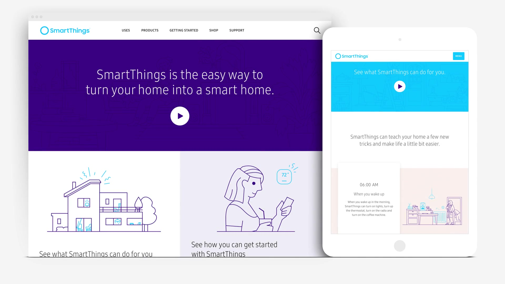

Samsung SmartThings
User experience and interaction design for the Samsung SmartThings website, part of a website and branding refresh for the smart home product line.
Okie Media
Identity and website design for an award-winning video production studio whose clients include NBC and Netflix.
WEASE
Full rebrand and site design for a Swedish cross-country ski startup, including client workshops, market research, and a complete brand book.
Look the part.
Make your point.
A close creative partnership for businesses entering their next chapter. You’ll work directly with me, with thoughtful guidance from our first conversation through to the final details.
A website that makes your business easy to understand.
Clear structure, considered visuals, and a compelling story help the right people see what you do and know what to do next.

An identity that feels like the business you’ve become.
A distinctive visual direction, carried through your logo, typography, color, and imagery, so the way you present your business reflects the quality behind it.

Your brand and website.
Designed as one.
When your next chapter calls for both, we’ll shape them together. A clear story and a cohesive visual identity, brought to life in a website built around the people you want to reach.

Ready for your next chapter.
A presence that reflects how far you’ve come and opens the door to what’s next. Let’s bring it to life ↗
Hi, I’m Amy.
Your design partner.
I founded &Liu Studio to bring agency-level craft directly to startups and independent businesses.
My agency experience includes work for brands like Samsung and Heineken. Now, I work directly with you to shape a website and identity that feel like your business, with the same care and fewer layers.


Let’s build
something.
Tell me a little about your project. I read every message and reply within two business days.